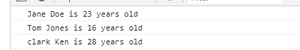
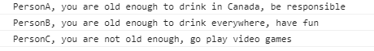

{
"id": 1,
"firstName": "Jane",
"lastName": "Doe",
"avatar": "jane_doe.jpg",
"email":" janed@example.com",
"hometown": "edmonton,ab",
"bio": "id1"
}From this, we create the variables janeDoe, tomJones, and clarkKen in a similar fashion to demonstrate design pattern.
var janeDoe = {
id : 1,
firstName : 'Jane',
lastName : 'Doe',
email : 'janed@example.com',
hometown : 'Edmonton, AB',
birthYear: 1995,
calculateAge : function() {
console.log(2018 - this.birthYear);
}
}
var tomJones = {
id: 2,
firstName : 'Tom',
lastName : 'Jones',
email: 'tommyg@example.com',
hometown: 'Edmonton, AB',
birthYear: 2002,
calculateAge : function() {
console.log(2018 - this.birthYear);
}
}
var clarkKen = {
id: 3,
firstName : 'Clark',
lastName : 'Ken',
email: 'clarkk@example.com',
hometown: 'Edmonton, AB',
birthYear: 1990,
calculateAge : function() {
console.log(2018 - this.birthYear);
}
}
The function constructor is creating objects through blueprinting. Parameters of the functions will be the variables we want to set in this object; in this case the parameters are id, firstName, lastName, email, hometown, and birthYear.
var Friend = function(id, firstName, lastName, email, hometown, birthYear) {
this.id = id; //the "this" variable is an object as well. this.name is the input of the function(the parameter of the function).
this.firstName = firstName;
this.lastName = lastName;
this.email = email;
this.hometown = hometown;
this.birthYear = birthYear;
}
Friend.prototype.calculateAge = function() {
console.log(`${this.firstName} ${this.lastName} is ${(new Date()).getFullYear() - this.birthYear} years old`);
}
// add a property to Friend to be inherited for all of its instances - 'mix it up'
Friend.prototype.school = 'NAIT';
// now we have the function constructor in place, we can use this constructor to create a janeDoeFriend object
var janeDoeFriend = new Friend(1, 'Jane', 'Doe', 'janed@example.com', 'Edmonton, AB', 1995); //when we use the "new" operator, a brand new object is created.
// the "new" operator points the "this" variable, not to the global object, but to this new empty object.
janeDoeFriend.calculateAge();
//Jane Doe is 23 years old
var tomJonesFriend = new Friend(2,'Tom','Jones','tommyg@example.com', 'Edmonton, AB', 2002);
tomJonesFriend.calculateAge();
The Object.Create method first defines an object that will act as the prototype, and then it creates a new object.
var FriendProto = {
calculateAge: function() {
console.log(`${this.firstName} ${this.lastName} is ${(new Date()).getFullYear() - this.birthYear} years old`);
}
};
var clark = Object.create(FriendProto,{
firstName: { value: 'clark'},
lastName: {value: 'Ken'},
email: {value: 'clarkk@example.com'},
hometown: {value: 'Edmonton, AB'},
birthYear: {value: 1990}
});
clark.calculateAge();
// The difference between object.create and the function constructor pattern is
// object.create builds an object that inherits directly from the one that we passed into the first argument.
// On the other hand, with the function constructor the newly created object inherits from the constructor's prototype property.
// The benefit of object.create is that it allows us to implement really complex inheritant structures in an easier way
// than function constructors because it allows us to directly specify which object should be a prototype.
When you execute the code in console, you would see this:
This section will demonstrate examples of using the callback function.
First, let's do an array calculation function:
var friendBirthYears = [janeDoeFriend.birthYear, tomJonesFriend.birthYear, clark.birthYear];
function arrayCalcution(array, fn) {
var arrayResult = [];
for (let i=0; i < array.length; i++) {
arrayResult.push(fn(array[i]));
}
return arrayResult;
}
In this case, what are we actually going to push into the array? The answer is that it will be the result of the fn function (the outer bracket (fn)) got pushed into the array. Then we pass the current element of the input array into this function, Array i, (the inner bracket( "fn()" )).
These functions will be called with the i element of the input array:
//callback functions:
function calculateAge(el) {
return (new Date()).getFullYear() - el;
}
function isFullAge(el) {
return el >= 18;
}
Now we execute the function and view our result
var ages = arrayCalcution(friendBirthYears, calculateAge); //Notice this is not the calculateAge() function, because we want this to be called later by the arrayCalculation function, which is why this is called the callback (because it is called later)
var fullAges = arrayCalcution(ages, isFullAge);
console.log(ages);
console.log(fullAges);
This is beneficial because this creats a modular and each function has a simple task rather than a big function that does a ton of things. This is achieved by passing functions around like variables - passing functions like arguments.
The following example shows an function returning an entire function.
function oldEnoughtoDrink (age) {
if (age >=21){
//use an anonymous function that accepts a name
return function(name) {
console.log(`${name}, you are old enough to drink everywhere, have fun`);
}
} else if (age >=18 && age <21) {
return function(name) {
console.log(`${name}, you are old enough to drink in Canada, be responsible`);
}
} else{
return function(name) {
console.log(`${name}, you are not old enough, go play video games`);
}
}
}
// now create variables to store the results
var ageVerificationA = oldEnoughtoDrink(18);
ageVerificationA('PersonA');
var ageVerificationB = oldEnoughtoDrink(21);
ageVerificationB('PersonB');
var ageVerificationC = oldEnoughtoDrink(17)('PersonC');
View result in console

function closureOldEnoughtoDrink (age) {
return function (name){
if(age>=21){
console.log(`${name}, you are old enough to drink everywhere, have fun`);
}else if (age>=18 && age <21){
console.log(`${name}, you are old enough to drink in Canada, be responsible`);
}else{
console.log(`${name}, you are not old enough, go play video games`);
}
}
}
closureOldEnoughtoDrink (21)('Bob.B');
console.log((new Date()).getFullYear()-janeDoeFriend.birthYear);
closureOldEnoughtoDrink ((new Date()).getFullYear()-janeDoeFriend.birthYear)(`${janeDoeFriend.firstName} ${janeDoeFriend.lastName}`);
IIFE focuses on data protection, instead of reuseability.
(function(birthYear){
var age = new Date().getFullYear() - birthYear;
if (age >=21){
//use an anonymous function that accepts a name
return function(name) {
console.log(`${name}, you are old enough to drink everywhere, have fun`);
}
} else if (age >=18 && age <21) {
return function(name) {
console.log(`${name}, you are old enough to drink in Canada, be responsible`);
}
} else{
return function(name) {
console.log(`${name}, you are not old enough, go play video games`);
}
}
})(1990)('David');